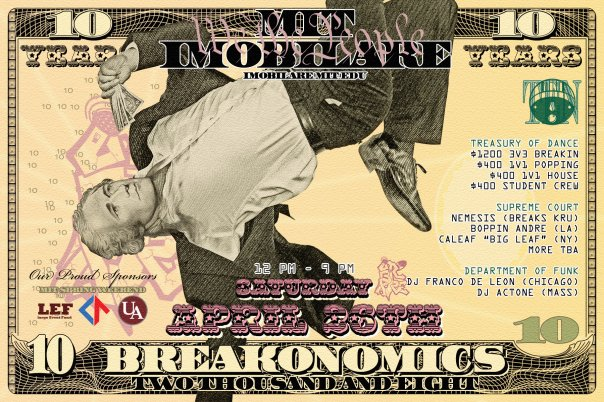
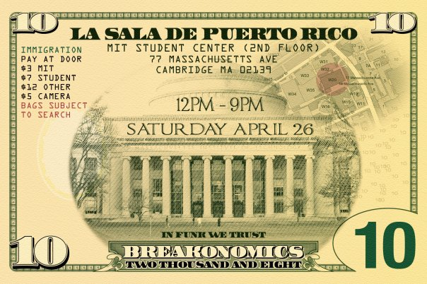

Imobilare is turning 10! We're throwing our biggest jam ever!
Part of MIT's Spring Weekend 2008!
Date: Saturday, April 26, 2008
Time: 12:00pm - 9:00pm
Location: La Sala de Puerto Rico (MIT Student Center 2nd Floor)
Street: 77 Massachusetts Ave.
City/Town: Cambridge, MA


BATTLES
$1200 3v3 Breakin'
$400 1v1 Poppin'
$400 1v1 House
$400 College/Highschool Crew
EXHIBITION
Judges Showcase
MIT Alums vs. Students
More TBA
JUDGES
BREAKING
Nemesis (Breaks Kru)
<http://www.youtube.com/watch?v=3yU93g5ki8A>
Toys (Lions of Zion, AWR, 4F)
<http://www.youtube.com/watch?v=vdzZ34fNqgw&feature=related>
Popsicle (Problemz Kru)
<http://www.youtube.com/watch?v=Sr7NvxOEvGA&feature=related>
POPPING - Boppin Andre (LA)
<http://www.youtube.com/watch?v=f8WmrZhqnu0&feature=related>
HOUSE - Caleaf (NY)
<http://www.youtube.com/watch?v=xwT-M1vWmUI>
More Judges TBA
MUSIC
Franco DeLeon (Chicago)
Actone (Boston)
TICKETS
All Day Pass sold at door.
$3 MIT
$7 student
$12 outside
$5 camera
SPONSORS
Council for the Arts Grant Program, LEF, UA Finboard, MIT Spring Weekend, Red Bull